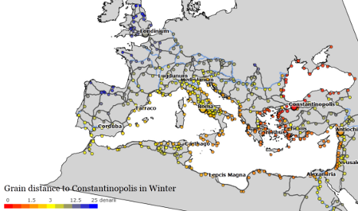
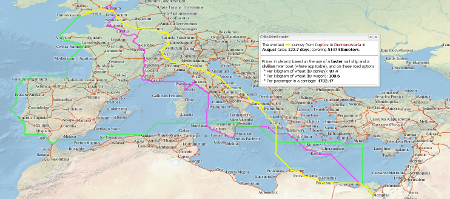
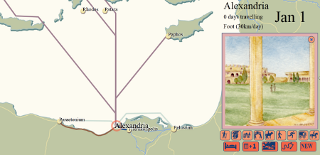
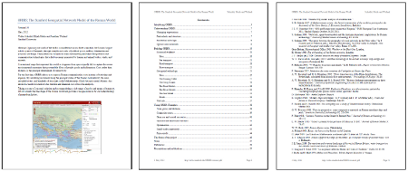
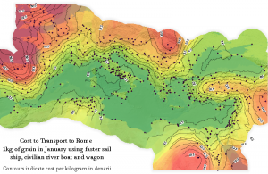
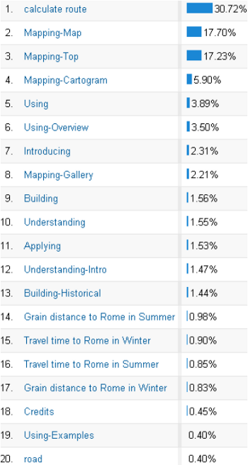
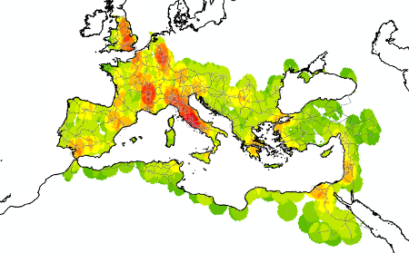

ORBIS is self-defined as a historical transportation network model of the Roman world, but while it is fundamentally a computational model, it is also part of a genre of objects that could be referred to as interactive scholarly works, and so in explaining how to use ORBIS it becomes necessary to also engage with interactive scholarly works in general. What follows is not solely an explanation of ORBIS, but an exploration of the genre in a broader sense, providing both pragmatic and theoretical examples of the usage of both.
ORBIS offers three primary perspectives on the transport of goods and movement of individuals in the Roman Empire: global, strategic, and situated. Each will be more or less suitable depending on the scale of inquiry. These views into the underlying model are presented by means of (respectively)a dynamic distance cartogram, a route mapping feature, and a first-person way-finding application.

The ORBIS dynamic distance cartogram affords users the capability of seeing the entire Roman world system at once, distorted based on time of year and priority of travel.
The distance cartogram demonstrates the dynamics of the general shape and size of the Roman world based on season and travel priority (choice of fastest or cheapest route). Geographic distances from Constantinople, Rome, London, and Antioch to the rest of the empire are transformed to time and expense distances for either January or June. Although computational cost permits offering only four sites at this time, each of these transfigurations imparts significant information about the remaining sites in relation to the four and each other.


One of the forms of expression of ORBIS is a route-finding interface that affords users the opportunity to examine the distance, duration, and expense of a trip between any two sites represented within the system.
At the next scale of inquiry, the ORBIS route mapper allows users to examine the costs and specific geometries of travel between any two of 650 sites based on a host of options. The use of the route map is explained in detail in the “Using ORBIS” section of the site, which includes a video tutorial. The results of this route-finding exploration can be downloaded in two standard file formats and integrated into other research (as KML for mapping or CSV for simple graphing or statistical analysis).

A view of the ORBIS model from the perspective of the site of Alexandria, showing the variety and nature of connections between Alexandria and other sites in the model.
A third, local view of the network is provided with the embedded ORBIS|via application, which allows users to navigate around the Roman network from site to site. As above, travel times are based upon the month and the mode or vehicle selected. The implementation of this “situated view” is to date fairly rudimentary, built as a proof-of-concept investigation of various aesthetic and functional forms, including those found in early video games.

The text and static images of much of the ORBIS site are available to download, formatted as a traditional journal article. While this may seem anachronistic, providing traditional representations of these kinds of works improves the likelihood of reuse in future scholarship.
There is a fourth mode of presentation, which could be easily overlooked given its traditional nature: virtually all the text and figures of ORBIS have been assembled verbatim as an article, downloadable from the site in PDF format. Arguably, scholarly digital products like the downloadable KML spatial data describing routes in ORBIS can be embedded in others’ work in much the same way that written arguments are with more traditional citation methods.


An isophoretric map of the Roman world, which uses cost contours to show the price to ship goods to Rome from all sites modeled in ORBIS. An isophoretric map requires not only the computation of numerous least-cost-paths, but the interpolation of such costs into a surface followed by the creation of contours based on that surface. This would require too much processing power to be made real-time and web-accessible on the ORBIS site.
Integral to this mode and capable of being engaged on their own are the series of static maps and other visualizations that populate the site. While dynamic and interactive elements provide significant capacity for users to engage with this type of content, static visual representations of data still provide the best method of communication in many cases, and are the only method to represent data that is too computationally expensive to provide in a web-accessible format. Many of these maps are available in the Map Gallery tab of Mapping ORBIS. Among these are not only maps of the Roman world based on the ORBIS model, but also maps and data visualization indicating how the ORBIS model functions.
Engagement with Modeled Arguments
Although ORBIS can be viewed as a tool for understanding travel in the Roman world, as a model it is also fundamentally a claim about the dynamic shape of the Roman world and the nature of transport within it. As Willard McCarty notes, “a model is by nature a simplified and therefore fictional or idealized representation, often taking quite a rough-and-ready form.”1 This representation is an argument or proposition that can be amended, extended, challenged, or refuted in the same manner of scholarly discourse involving monographs and journal articles and as noted, by integration of digital products like spatial and tabular data in other works. More ambitious scholars can integrate the code for ORBIS, in whole or in part, into their own systems for pre-modern transportation networks around the world. However, given the formal and explicit nature of a computational model, scholars can potentially pursue a more sophisticated engagement with individual components of it without focusing on either extreme.
McCarty writes of modeling being the means to achieve, “a computing that is of as well as in the humanities: a continual process of coming to know by manipulating representations.” Such direct integration and interaction with the model in unexpected ways requires digital interfaces to it, and is part of a movement toward interoperability between geospatial models reflecting a growing trend in GIS.2 One of these interfaces, the API, allows programmatic consumption of data and results, permitting scholars to not only embed specific elements of one model or dataset into their own, but also to cite these elements in their scholarship. APIs still require a level of programming knowledge that may mitigate engagement, and so as an extension of that concept, and possibly more useful to many digital humanities scholars, the next phase of ORBIS provides both an API3 and an interactive “exploded” representation of the model. This will include the means for users to enter their own values for parameters such as vehicle speed, seasonal weighting, and so on, without requiring the level of programming knowledge necessary to use an API.
Interactive Scholarly Works in Education
Like other secondary sources, interactive scholarly works (ISWs) can be formatted or presented in such a way as to serve as textbooks; that is, teaching resources around which entire courses or sets of course units can be structured. In the case of ORBIS, development of such digital resources followed naturally from a research project; others might be designed primarily for educational purposes from their inception. ISWs such as ORBIS are particularly well-suited to the emerging “massively on-line course” (MOOC) setting. As it stands, much of the course material for MOOCs is dynamic but not interactive — most often it is interactive only in features like polls and forums.
When integrated with lesson plans and exercises designed to stimulate discussion and active engagement — using simulations, for example — an ISW could provide the means to transition MOOCs from a relatively simple ‘lecture-plus-homework’ framework to something more nearly like seminars. We don’t believe computing resources are an impediment to adding functionality; when ORBIS received extremely high traffic during particular periods in its first month, performance was more than adequate with only modest server resources. While ORBIS was not designed as a MOOC, it could easily be extended to allow scenarios and content to change over the course of a class, and even the creation of content on the part of users, fulfilling the need for essays and testing, could be integrated into the site architecture.
Web Analytics and Pedagogy
ISWs lend themselves to tracking student usage at both coarse and fine resolution. We argue this can help teachers of these courses to better understand how their students are engaging with the material. At a coarse resolution, simple web analytics can demonstrate the amount of time spent on a site or on any of its pages. At a finer resolution, individual actions and activity paths can be recorded. As ORBIS was not designed to track this kind of usage from its inception, we can only provide a few examples based on the rudimentary analytics currently available on the site.

Overall site usage of ORBIS based on the activity of users. Note that this can represent both traditional page-view style metrics as well as engagement with particular functions of the site.
Simple analytics can demonstrate the amount of time spent on a website, as well as the actions performed there. These “events” can consist not only of visiting a particular tab but of performing a specific activity, such as calculating a route in the route finder, traveling by road in ORBIS|via, or distorting the cartogram according to one of the various options available.


A heat map demonstrating the usage of ORBIS|via based on site selection. Such heat maps or other representations of usage can easily be correlated with proficiency demonstrated in more traditional areas, such as exams and papers.
Engaging the general public
The extraordinary traffic to the ORBIS site4 indicates to us that people really like ISWs. Although the potential popularity will vary considerably depending on topic and the range of functions, affordances provided in them mean that scholars are able to simultaneously release a rigorous scholarly work and a popular scholarly work. Built for one audience, the underlying model can address many, and requires little effort to transition between them.
Conclusion
A well-designed interactive scholarly work is amenable to multiple points of view as well as multiple points of interaction, blurring the line between academic and popular scholarship, as well as research, archive, and pedagogical resource. While ORBIS provides its creators with much of that capacity, it does not yet provide it to everyday users. It is really in this final sense that ORBIS, while a tool, is very much a piece of scholarship.
Future extension of ORBIS will provide more opportunities for scholars and other audiences to use it in these and as-yet-unforeseen manners, and making the inner working of models accessible is an important and challenging design issue for digital humanities scholars. Ultimately, models are best understood by those that create and engage with them, and so ORBIS is at its best as a work when seen not just as orbis.stanford.edu but also as a set of functions, code, data, and methodologies to be replicated and extended elsewhere. To treat such objects only as tools, and implicitly capable only of providing that which they were designed to provide, undercuts the possibilities of advancing the use of models and modeling in the humanities. This is why it is proper to treat interactive scholarly works not only as computational models but also as publishing models, with multiple forms of expression creating a distinct genre.
Willard McCarty, “Modeling: A Study in Words and Meanings” in Susan Schreibman, Ray Siemens, and John Unsworth, eds., A Companion to Digital Humanities(Oxford: Blackwell, 2004). http://www.digitalhumanities.org/companion/. ↩︎
G. Geller and W. Turner, “The Model Web: A Concept for Ecological Forecasting,” in _Proceedings of the Geoscience and Remote Sensing Symposium,_2007. IGARSS 2007. IEEE International: 2469–72. ↩︎
Over 400,000 visitors to a scholarly research publication in its first three months. ↩︎